Introdução
A Ktec é uma loja inovadora no mercado de celulares, buscando ser a empresa número 1 do Brasil. Nosso foco está em oferecer produtos de alta qualidade, com atendimento personalizado e um compromisso com a sustentabilidade.
Missão: Facilitar o acesso à tecnologia e oferecer suporte completo ao cliente.
Visão: Ser referência no mercado de celulares, com foco em inovação e qualidade.
Valores: Inovação, Sustentabilidade, Atendimento Personalizado.
Público-alvo
- Características: Entusiastas de tecnologia e redes sociais, sempre em busca de dispositivos com boa câmera, desempenho para jogos e redes sociais, e conectividade 5G.
- Necessidades Smartphones modernos com boa capacidade de armazenamento, câmeras de alta qualidade, e acessórios para personalização (capinhas, fones, etc.).
- Abordagem: Vídeos e comparativos de aparelhos populares, conteúdo em redes sociais e descontos para estudantes.
- Jovens e Adolescentes (16-25 anos)
- Características: Interessados em tecnologia acessível e confiável para o uso diário, e também para seus filhos adolescentes ou pré-adolescentes.
- Necessidades Aparelhos com boa durabilidade, segurança, e opções para controle parental.
- Abordagem: Ofertas em pacotes familiares, opções de pagamento facilitado, e tutoriais para ensinar recursos de segurança e controle.
- Pais e Famílias (30-45 anos)
- Características: Precisam de smartphones para uso profissional, incluindo produtividade e organização.
- Necessidades Celulares com boa capacidade de bateria, desempenho multitarefa, e integração com serviços de produtividade.
- Abordagem: Demonstrações de funcionalidades de produtividade e integração com software de trabalho, além de comparativos entre celulares voltados para profissionais.
- Profissionais e Empreendedores (25-50 anos)
- Características: Procuram celulares fáceis de usar, com botões intuitivos, letras maiores e suporte rápido.
- Necessidades Facilidade de uso, acessibilidade, e assistência na configuração.
- Abordagem: Guias práticos, tutoriais em vídeo sobre funções básicas, e suporte pós-venda para auxiliar na adaptação.
- Idosos e Pessoas de Terceira Idade (60+ anos)
Conceito do logotipo
- Centralidade no Celular: A imagem de um celular com circuitos no centro representa o foco da Ktec em dispositivos móveis. Isso remete imediatamente à ideia de uma loja especializada em celulares.
- Circuitos e Conectividade: Os circuitos que saem do celular e se expandem para os lados simbolizam a conectividade e o fluxo de tecnologia, indicando que a Ktec é mais do que apenas uma loja — ela se conecta aos clientes e facilita a interação com o mundo digital.
- Cores em Tons de Laranja e Marrom: As cores escolhidas, que variam entre tons de laranja e marrom, passam uma sensação de energia, inovação e confiança. O laranja chama atenção e remete à modernidade, enquanto o marrom acrescenta um toque de seriedade e credibilidade, equilibrando o visual.
- Minimalismo Moderno: A simplicidade do design, sem detalhes excessivos, torna a logo moderna e visualmente atraente. Esse estilo minimalista facilita o reconhecimento em qualquer tamanho, desde um ícone pequeno até o topo de um site.
- Simbolismo de Conexão: Os circuitos saindo do dispositivo sugerem que a Ktec não apenas vende celulares, mas também oferece soluções tecnológicas e assistência, criando um “conexão” entre o cliente e a tecnologia.
Logotipo
Logotipo principal:
Tamanho minímo da logo:
Logomarca principal:
- Uso correto: Sempre utilize o logotipo em sua forma original, sem distorções e mudança da cor laranja, tome cuidado ao utilizar a logo branca, nem todos os fundos da logo principal servem para ela.
- Uso incorreto: Nunca altere as proporções,, cores ou orientação do logotipo, nunca coloque um fundo muito escuro e degrade. (Obs: A logo branca com a cor de fundo Cinza (#E7EAE3) não deve ser utilizada por ninguem de fora da Ktec, somente a Ktec pode utiliza-la.) 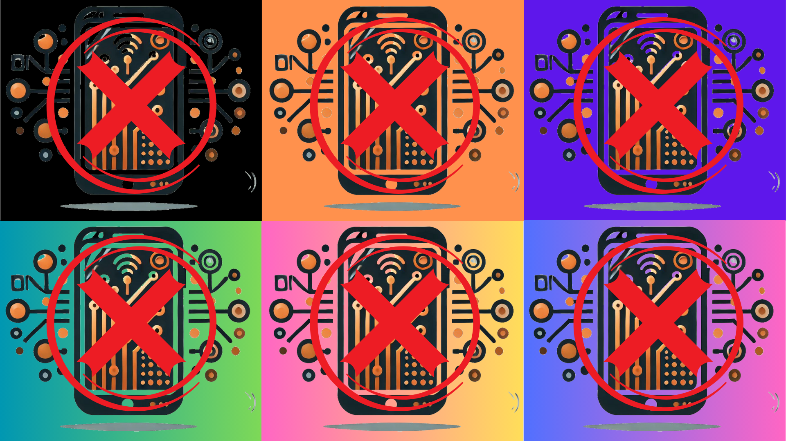
Tipografia
- Fonte primária: Shrikhand – Usada em títulos e textos de destaque.
- Fontes segundarias: Dancing Script e Open sans – Usada em frases e slogans.
As fontes oficiais da Ktec são:
a b c d e f g h i j k l m n o p q r s t u v w x y z
a b c d e f g h i j k l m n o p q r s t u v w x y z
a b c d e f g h i j k l m n o p q r s t u v w x y z
a b c d e f g h i j k l m n o p q r s t u v w x y z
a b c d e f g h i j k l m n o p q r s t u v w x y z
a b c d e f g h i j k l m n o p q r s t u v w x y z
A fonte primária "Shrikhand"", ela usada sempre no nome da loja e para enfase em textos importantes em documentos, ela sempre é maior que as fontes segundarias.
A fonte segundaria "Dancing Script", usada como subtitulo na logomarca, ela é importante para dar destaque ao que é a ktec, por Exemplo "Loja de celulares".
E por ultimo a "Opens sans", usada em documentos e no sistema como fonte padrão para textos.
Paleta de cores
As cores principais da Ktec refletem a modernidade e o comprometimento da marca:
- Cinza (#E7EAE3) - tecnologia, neutralidade
- Laranja (#F28705) - Energia, inovação
- Marrom (#734C1D) - Confiabilidade, proximidade
- Bege (#D9C0A3) - Elegância, sofisticação
- Cinza (231, 234, 227)
- Laranja (242, 135, 5)
- Marrom (115, 76, 29)
- Bege (217, 192, 163)
- Cinza (1% C, 0% M, 3% Y, 8% K)
- Laranja (0% C, 44% M, 98% Y, 5% K)
- Marrom (0% C, 34% M, 75% Y, 55% K)
- Bege (0% C, 13% M, 25% Y, 15% K)
- Cinza - Pantone Cool Gray 1 C
- Laranja - Pantone 1375 C
- Marrom - Pantone 4635 C
- Bege - Pantone 475 C
Aplicação


 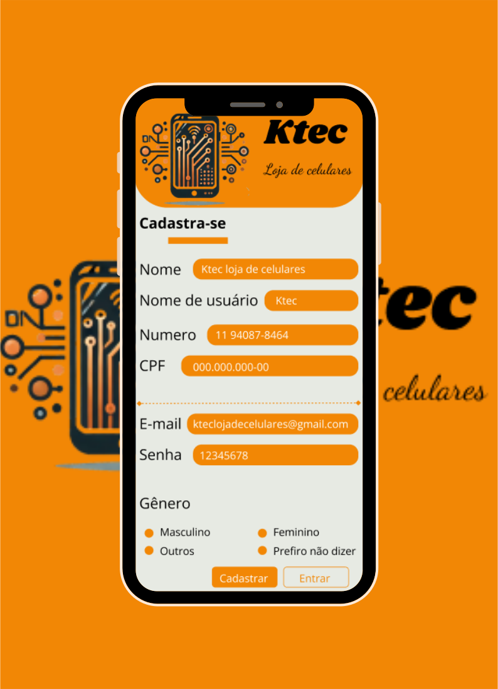
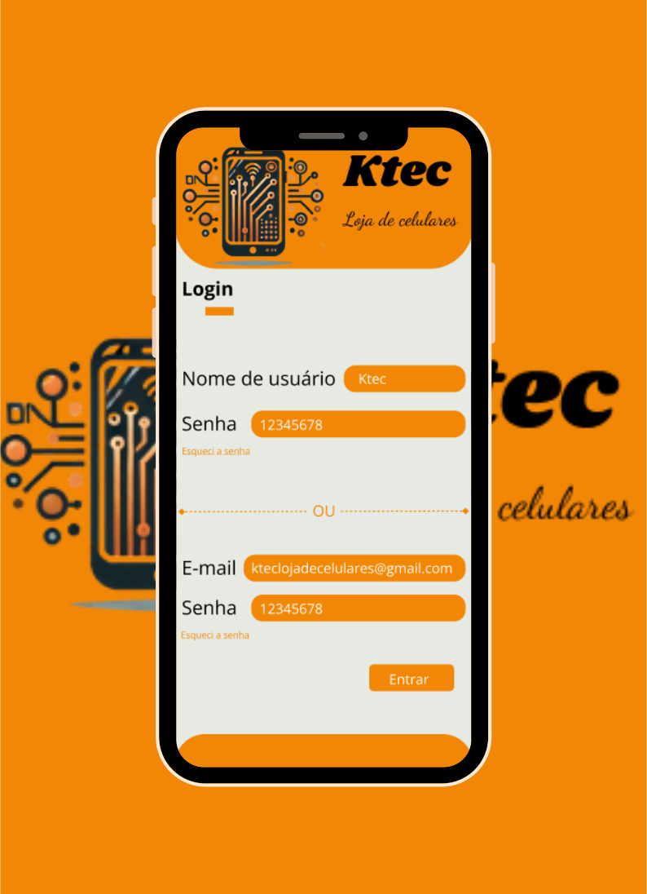
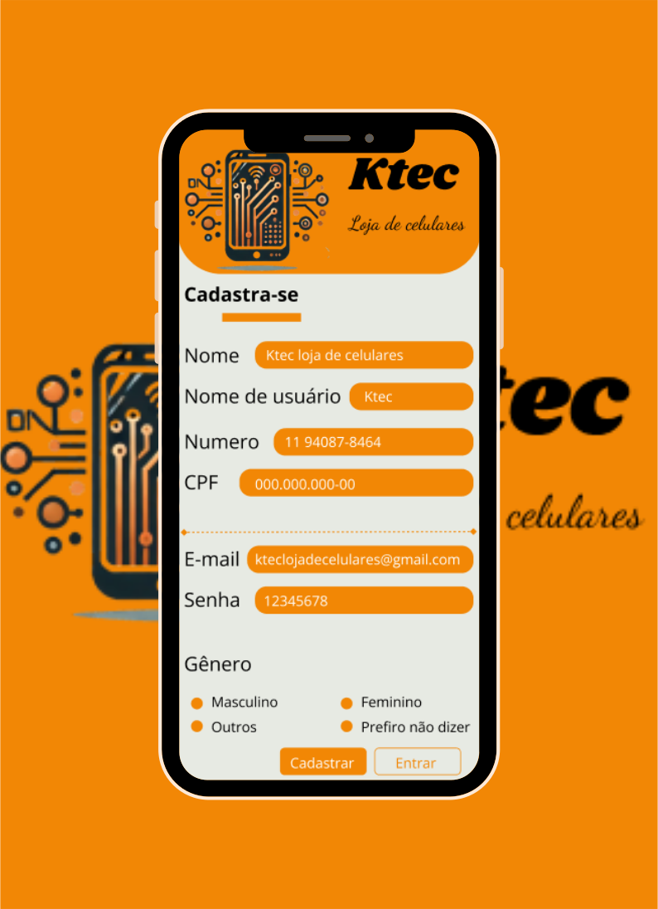
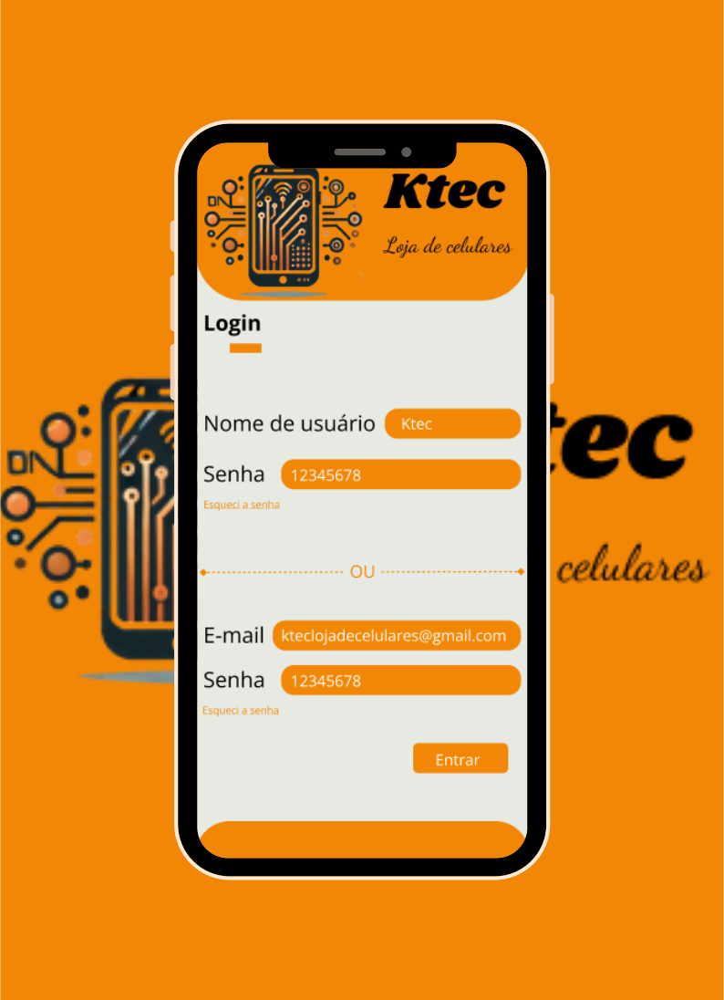
 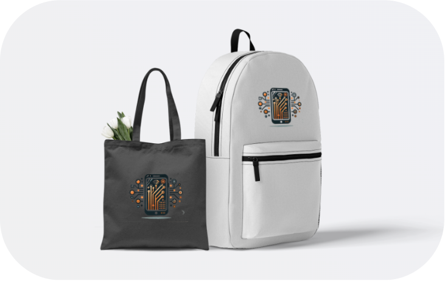
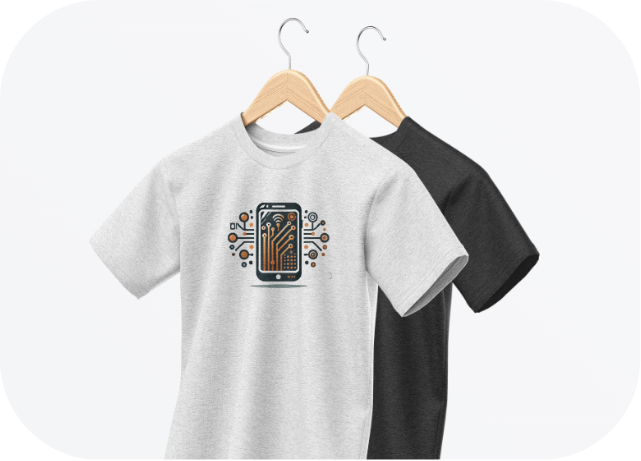
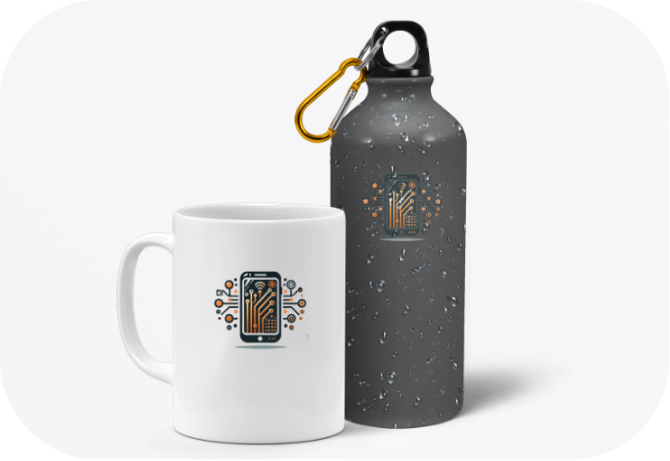
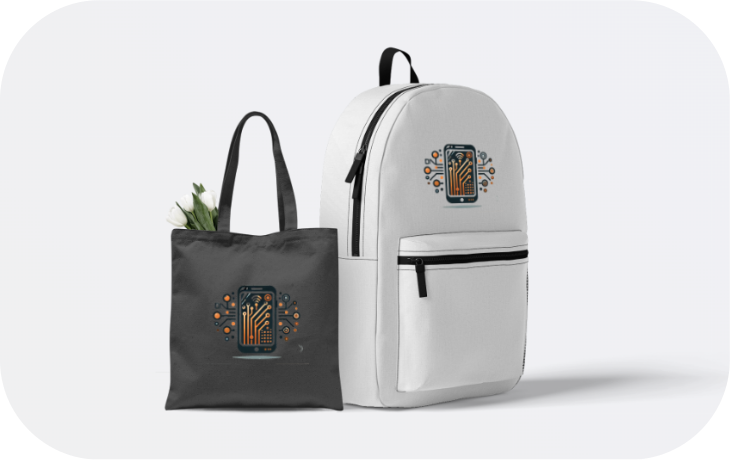
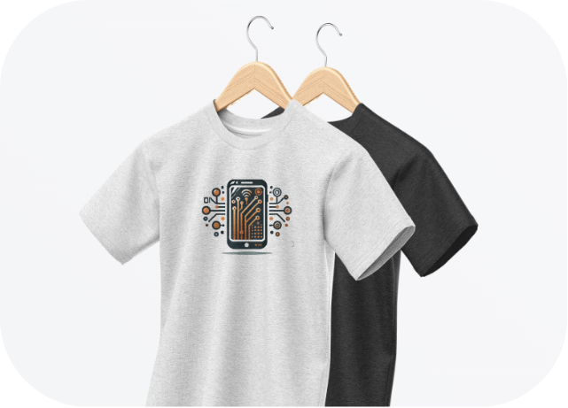
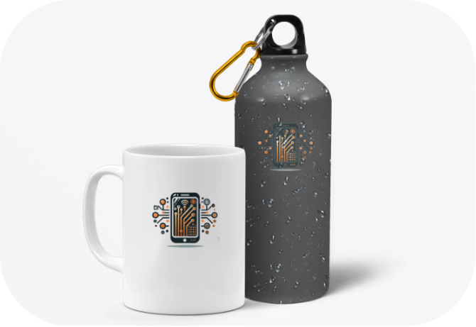